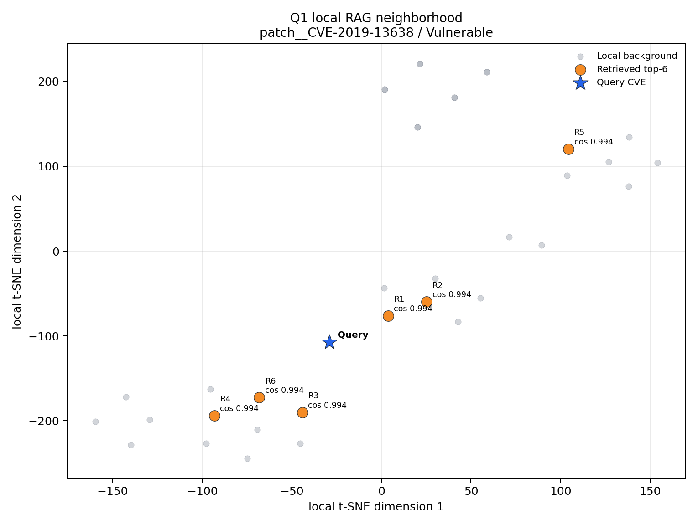
| Rank | Retrieved project | Source category | Reference family | Cosine | FAISS L2 | Distance percentile |
|---|---|---|---|---|---|---|
| R1 | urjtag-0.8 | Open Source Project | CVE/Open Source Project | 0.9939 | 5.5853 | 0.0001 |
| R2 | urjtag-0.8 | Open Source Project | CVE/Open Source Project | 0.9939 | 5.6009 | 0.0001 |
| R3 | urjtag-0.8 | Open Source Project | CVE/Open Source Project | 0.9939 | 5.6021 | 0.0002 |
| R4 | urjtag-0.8 | Open Source Project | CVE/Open Source Project | 0.9939 | 5.6023 | 0.0005 |
| R5 | urjtag-0.8 | Open Source Project | CVE/Open Source Project | 0.9939 | 5.6056 | 0.0006 |
| R6 | urjtag-0.8 | Open Source Project | CVE/Open Source Project | 0.9939 | 5.6093 | 0.0006 |
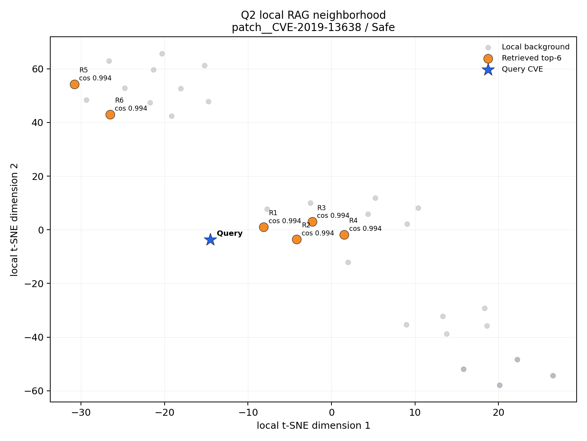
| Rank | Retrieved project | Source category | Reference family | Cosine | FAISS L2 | Distance percentile |
|---|---|---|---|---|---|---|
| R1 | urjtag-0.8 | Open Source Project | CVE/Open Source Project | 0.9937 | 5.7999 | 0.0000 |
| R2 | urjtag-0.8 | Open Source Project | CVE/Open Source Project | 0.9937 | 5.8209 | 0.0001 |
| R3 | urjtag-0.8 | Open Source Project | CVE/Open Source Project | 0.9936 | 5.8488 | 0.0003 |
| R4 | urjtag-0.8 | Open Source Project | CVE/Open Source Project | 0.9936 | 5.8680 | 0.0005 |
| R5 | urjtag-0.8 | Open Source Project | CVE/Open Source Project | 0.9936 | 5.9009 | 0.0007 |
| R6 | urjtag-0.8 | Open Source Project | CVE/Open Source Project | 0.9936 | 5.9009 | 0.0007 |
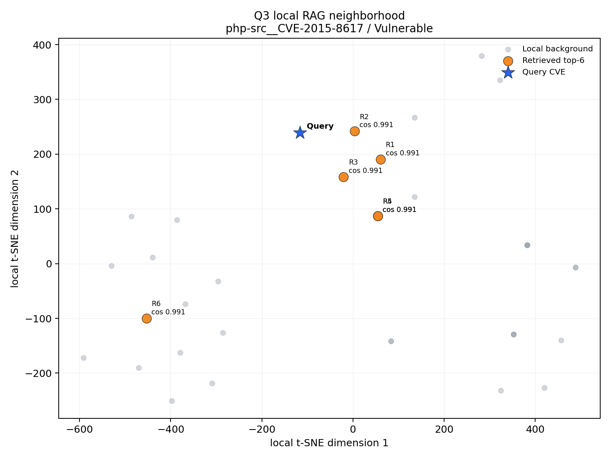
| Rank | Retrieved project | Source category | Reference family | Cosine | FAISS L2 | Distance percentile |
|---|---|---|---|---|---|---|
| R1 | autotrace-20200219.65 | Open Source Project | CVE/Open Source Project | 0.9912 | 8.2255 | 0.0000 |
| R2 | autotrace-20200219.65 | Open Source Project | CVE/Open Source Project | 0.9912 | 8.2255 | 0.0000 |
| R3 | autotrace-20200219.65 | Open Source Project | CVE/Open Source Project | 0.9912 | 8.2257 | 0.0002 |
| R4 | autotrace-20200219.65 | Open Source Project | CVE/Open Source Project | 0.9910 | 8.3818 | 0.0003 |
| R5 | autotrace-20200219.65 | Open Source Project | CVE/Open Source Project | 0.9910 | 8.3818 | 0.0003 |
| R6 | urjtag-0.8 | Open Source Project | CVE/Open Source Project | 0.9910 | 8.4030 | 0.0006 |
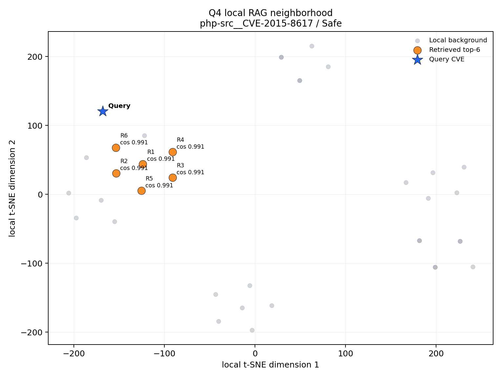
| Rank | Retrieved project | Source category | Reference family | Cosine | FAISS L2 | Distance percentile |
|---|---|---|---|---|---|---|
| R1 | urjtag-0.8 | Open Source Project | CVE/Open Source Project | 0.9914 | 8.0242 | 0.0000 |
| R2 | urjtag-0.8 | Open Source Project | CVE/Open Source Project | 0.9914 | 8.0243 | 0.0002 |
| R3 | urjtag-0.8 | Open Source Project | CVE/Open Source Project | 0.9913 | 8.0487 | 0.0005 |
| R4 | urjtag-0.8 | Open Source Project | CVE/Open Source Project | 0.9913 | 8.0487 | 0.0005 |
| R5 | urjtag-0.8 | Open Source Project | CVE/Open Source Project | 0.9913 | 8.0576 | 0.0005 |
| R6 | urjtag-0.8 | Open Source Project | CVE/Open Source Project | 0.9913 | 8.0576 | 0.0005 |
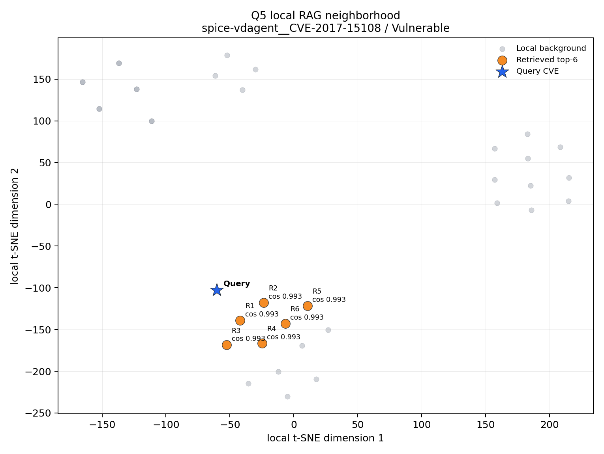
| Rank | Retrieved project | Source category | Reference family | Cosine | FAISS L2 | Distance percentile |
|---|---|---|---|---|---|---|
| R1 | urjtag-0.8 | Open Source Project | CVE/Open Source Project | 0.9928 | 6.6779 | 0.0000 |
| R2 | urjtag-0.8 | Open Source Project | CVE/Open Source Project | 0.9928 | 6.6780 | 0.0002 |
| R3 | urjtag-0.8 | Open Source Project | CVE/Open Source Project | 0.9927 | 6.7131 | 0.0002 |
| R4 | urjtag-0.8 | Open Source Project | CVE/Open Source Project | 0.9927 | 6.7131 | 0.0002 |
| R5 | urjtag-0.8 | Open Source Project | CVE/Open Source Project | 0.9927 | 6.7201 | 0.0007 |
| R6 | urjtag-0.8 | Open Source Project | CVE/Open Source Project | 0.9927 | 6.7201 | 0.0007 |
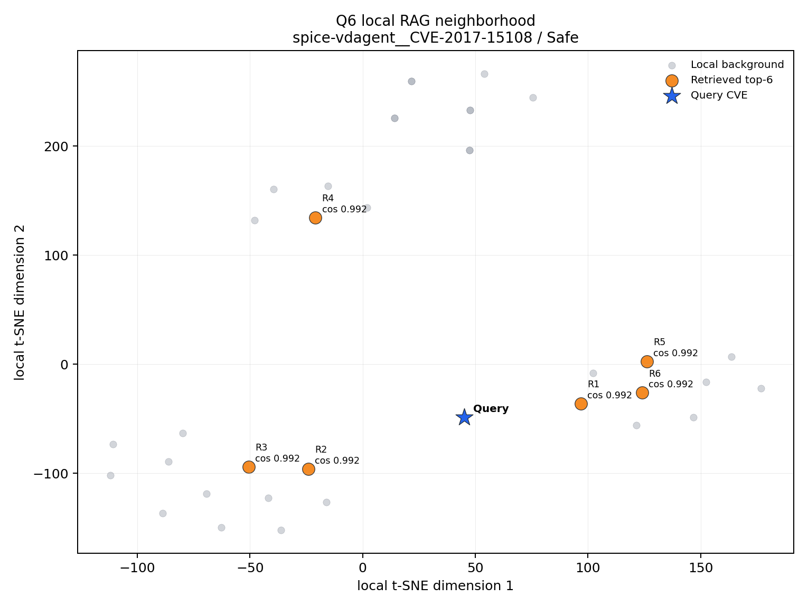
| Rank | Retrieved project | Source category | Reference family | Cosine | FAISS L2 | Distance percentile |
|---|---|---|---|---|---|---|
| R1 | urjtag-0.8 | Open Source Project | CVE/Open Source Project | 0.9924 | 7.0150 | 0.0000 |
| R2 | urjtag-0.8 | Open Source Project | CVE/Open Source Project | 0.9924 | 7.0367 | 0.0001 |
| R3 | urjtag-0.8 | Open Source Project | CVE/Open Source Project | 0.9924 | 7.0367 | 0.0001 |
| R4 | urjtag-0.8 | Open Source Project | CVE/Open Source Project | 0.9924 | 7.0458 | 0.0003 |
| R5 | urjtag-0.8 | Open Source Project | CVE/Open Source Project | 0.9924 | 7.0601 | 0.0005 |
| R6 | urjtag-0.8 | Open Source Project | CVE/Open Source Project | 0.9923 | 7.0648 | 0.0006 |
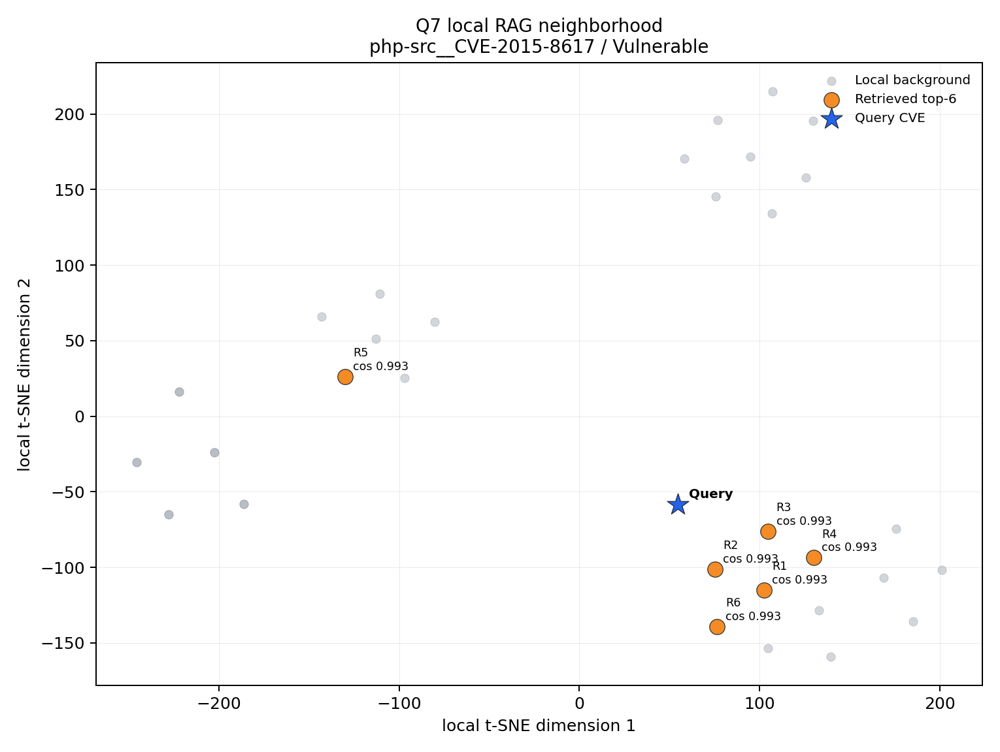
| Rank | Retrieved project | Source category | Reference family | Cosine | FAISS L2 | Distance percentile |
|---|---|---|---|---|---|---|
| R1 | urjtag-0.8 | Open Source Project | CVE/Open Source Project | 0.9929 | 6.6040 | 0.0002 |
| R2 | urjtag-0.8 | Open Source Project | CVE/Open Source Project | 0.9929 | 6.6040 | 0.0002 |
| R3 | urjtag-0.8 | Open Source Project | CVE/Open Source Project | 0.9929 | 6.6090 | 0.0002 |
| R4 | urjtag-0.8 | Open Source Project | CVE/Open Source Project | 0.9929 | 6.6090 | 0.0002 |
| R5 | urjtag-0.8 | Open Source Project | CVE/Open Source Project | 0.9928 | 6.6205 | 0.0006 |
| R6 | urjtag-0.8 | Open Source Project | CVE/Open Source Project | 0.9928 | 6.6459 | 0.0006 |
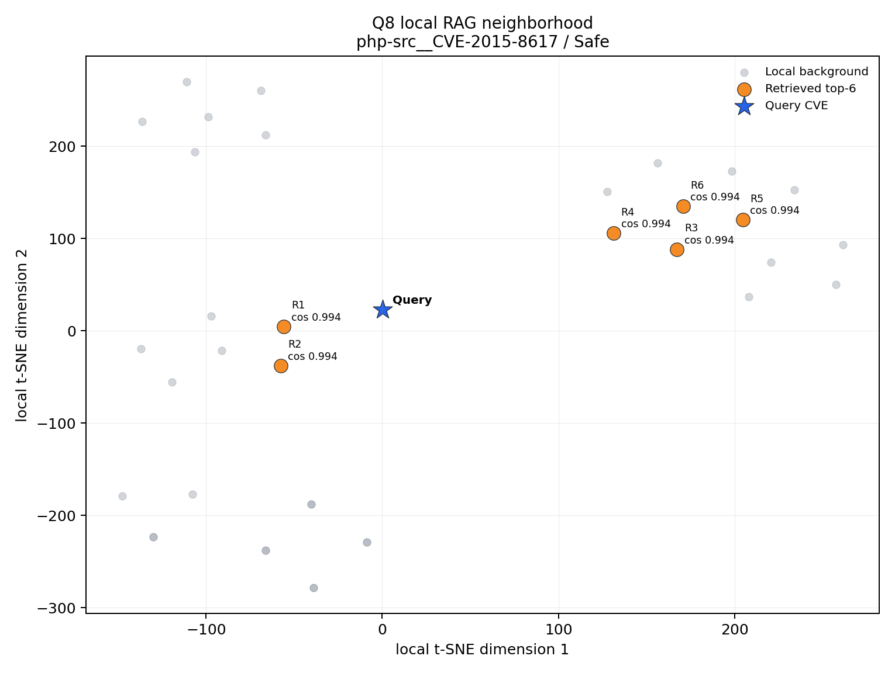
| Rank | Retrieved project | Source category | Reference family | Cosine | FAISS L2 | Distance percentile |
|---|---|---|---|---|---|---|
| R1 | urjtag-0.8 | Open Source Project | CVE/Open Source Project | 0.9936 | 5.9103 | 0.0001 |
| R2 | urjtag-0.8 | Open Source Project | CVE/Open Source Project | 0.9936 | 5.9274 | 0.0001 |
| R3 | urjtag-0.8 | Open Source Project | CVE/Open Source Project | 0.9936 | 5.9518 | 0.0005 |
| R4 | urjtag-0.8 | Open Source Project | CVE/Open Source Project | 0.9936 | 5.9519 | 0.0005 |
| R5 | urjtag-0.8 | Open Source Project | CVE/Open Source Project | 0.9936 | 5.9576 | 0.0005 |
| R6 | urjtag-0.8 | Open Source Project | CVE/Open Source Project | 0.9936 | 5.9576 | 0.0005 |
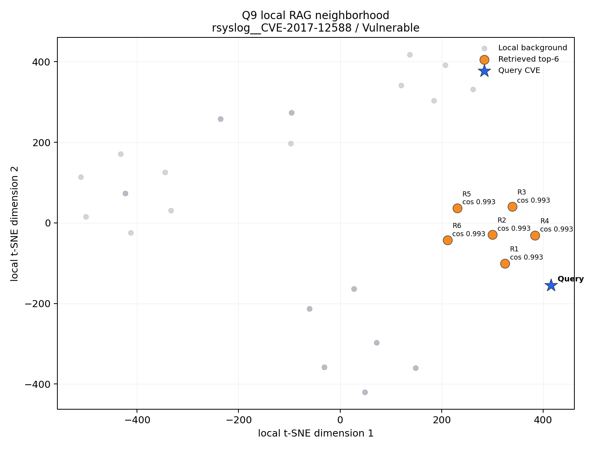
| Rank | Retrieved project | Source category | Reference family | Cosine | FAISS L2 | Distance percentile |
|---|---|---|---|---|---|---|
| R1 | urjtag-0.8 | Open Source Project | CVE/Open Source Project | 0.9935 | 6.0132 | 0.0001 |
| R2 | urjtag-0.8 | Open Source Project | CVE/Open Source Project | 0.9935 | 6.0141 | 0.0002 |
| R3 | urjtag-0.8 | Open Source Project | CVE/Open Source Project | 0.9935 | 6.0509 | 0.0005 |
| R4 | urjtag-0.8 | Open Source Project | CVE/Open Source Project | 0.9935 | 6.0510 | 0.0005 |
| R5 | urjtag-0.8 | Open Source Project | CVE/Open Source Project | 0.9934 | 6.0900 | 0.0006 |
| R6 | urjtag-0.8 | Open Source Project | CVE/Open Source Project | 0.9934 | 6.1274 | 0.0007 |
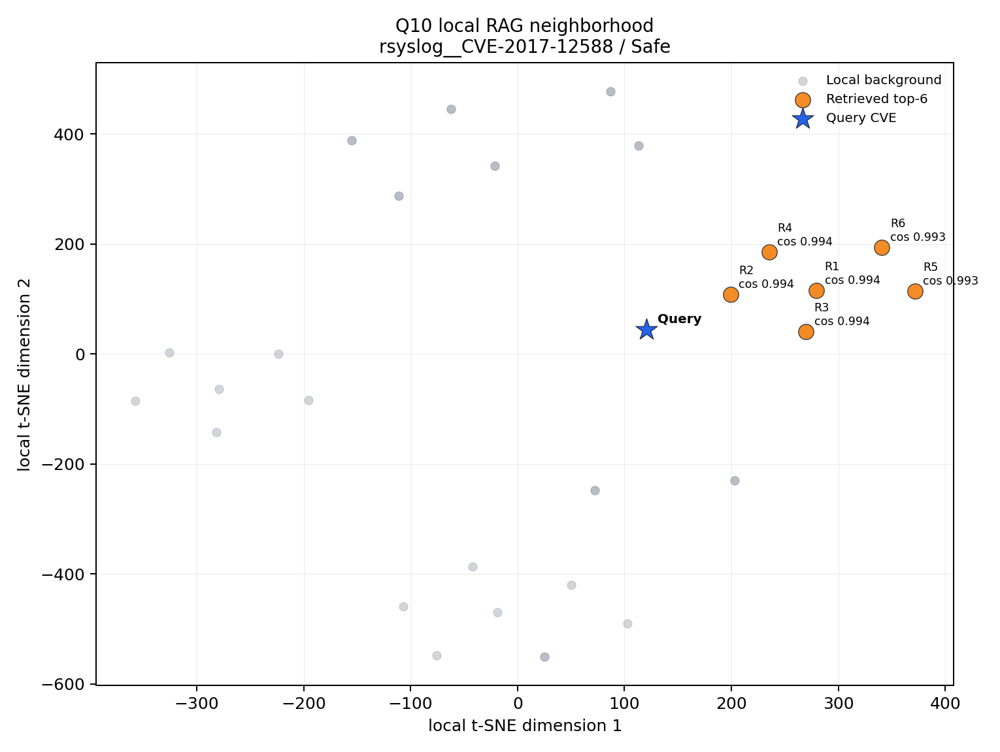
| Rank | Retrieved project | Source category | Reference family | Cosine | FAISS L2 | Distance percentile |
|---|---|---|---|---|---|---|
| R1 | urjtag-0.8 | Open Source Project | CVE/Open Source Project | 0.9935 | 5.9749 | 0.0000 |
| R2 | urjtag-0.8 | Open Source Project | CVE/Open Source Project | 0.9935 | 5.9771 | 0.0001 |
| R3 | urjtag-0.8 | Open Source Project | CVE/Open Source Project | 0.9935 | 6.0118 | 0.0002 |
| R4 | urjtag-0.8 | Open Source Project | CVE/Open Source Project | 0.9935 | 6.0140 | 0.0003 |
| R5 | urjtag-0.8 | Open Source Project | CVE/Open Source Project | 0.9935 | 6.0504 | 0.0006 |
| R6 | urjtag-0.8 | Open Source Project | CVE/Open Source Project | 0.9934 | 6.0880 | 0.0007 |
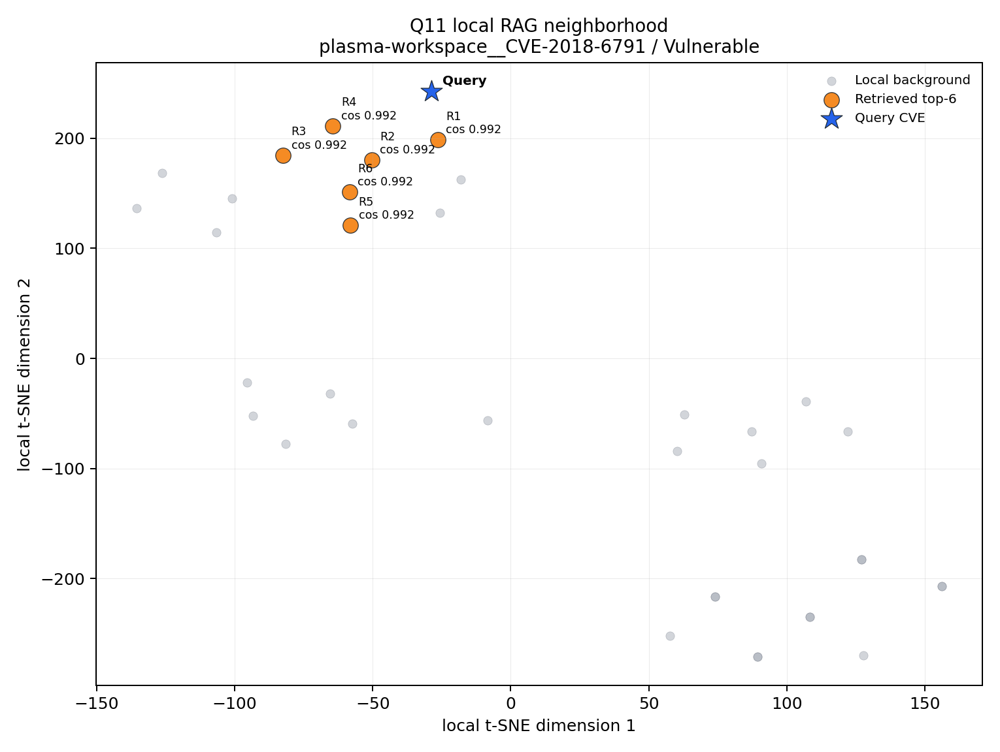
| Rank | Retrieved project | Source category | Reference family | Cosine | FAISS L2 | Distance percentile |
|---|---|---|---|---|---|---|
| R1 | urjtag-0.8 | Open Source Project | CVE/Open Source Project | 0.9919 | 7.4856 | 0.0000 |
| R2 | urjtag-0.8 | Open Source Project | CVE/Open Source Project | 0.9919 | 7.4857 | 0.0002 |
| R3 | urjtag-0.8 | Open Source Project | CVE/Open Source Project | 0.9919 | 7.4916 | 0.0005 |
| R4 | urjtag-0.8 | Open Source Project | CVE/Open Source Project | 0.9919 | 7.4916 | 0.0005 |
| R5 | urjtag-0.8 | Open Source Project | CVE/Open Source Project | 0.9919 | 7.5294 | 0.0007 |
| R6 | urjtag-0.8 | Open Source Project | CVE/Open Source Project | 0.9919 | 7.5294 | 0.0007 |
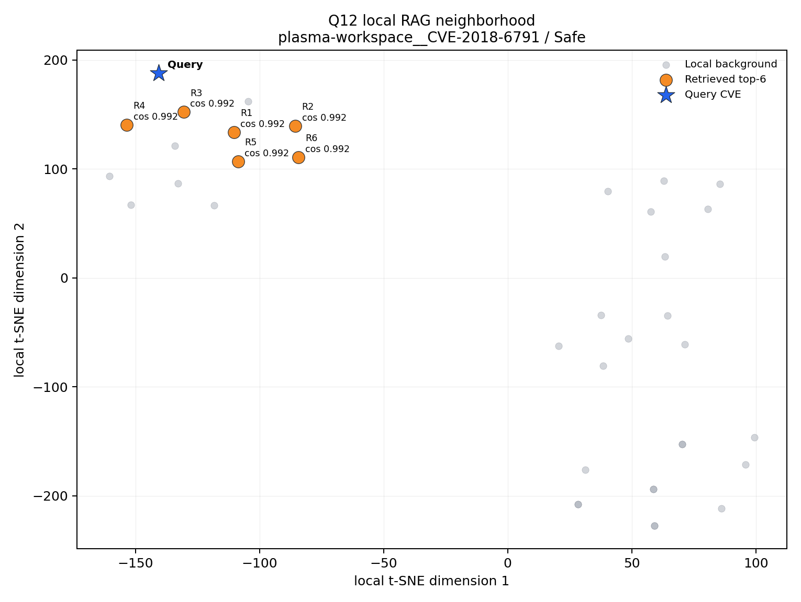
| Rank | Retrieved project | Source category | Reference family | Cosine | FAISS L2 | Distance percentile |
|---|---|---|---|---|---|---|
| R1 | urjtag-0.8 | Open Source Project | CVE/Open Source Project | 0.9920 | 7.3819 | 0.0000 |
| R2 | urjtag-0.8 | Open Source Project | CVE/Open Source Project | 0.9920 | 7.3820 | 0.0000 |
| R3 | urjtag-0.8 | Open Source Project | CVE/Open Source Project | 0.9920 | 7.3875 | 0.0005 |
| R4 | urjtag-0.8 | Open Source Project | CVE/Open Source Project | 0.9920 | 7.3876 | 0.0005 |
| R5 | urjtag-0.8 | Open Source Project | CVE/Open Source Project | 0.9920 | 7.4272 | 0.0005 |
| R6 | urjtag-0.8 | Open Source Project | CVE/Open Source Project | 0.9920 | 7.4272 | 0.0005 |
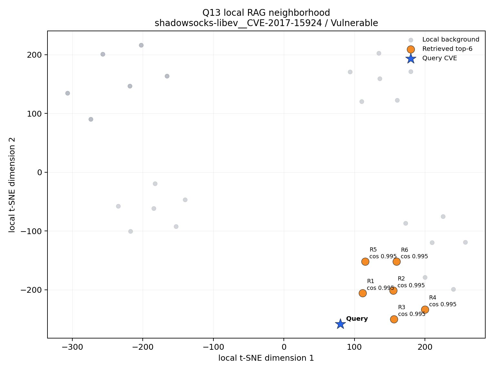
| Rank | Retrieved project | Source category | Reference family | Cosine | FAISS L2 | Distance percentile |
|---|---|---|---|---|---|---|
| R1 | urjtag-0.8 | Open Source Project | CVE/Open Source Project | 0.9949 | 4.6165 | 0.0000 |
| R2 | urjtag-0.8 | Open Source Project | CVE/Open Source Project | 0.9949 | 4.6165 | 0.0000 |
| R3 | urjtag-0.8 | Open Source Project | CVE/Open Source Project | 0.9949 | 4.6422 | 0.0002 |
| R4 | urjtag-0.8 | Open Source Project | CVE/Open Source Project | 0.9949 | 4.6423 | 0.0003 |
| R5 | urjtag-0.8 | Open Source Project | CVE/Open Source Project | 0.9949 | 4.6506 | 0.0007 |
| R6 | urjtag-0.8 | Open Source Project | CVE/Open Source Project | 0.9949 | 4.6506 | 0.0007 |
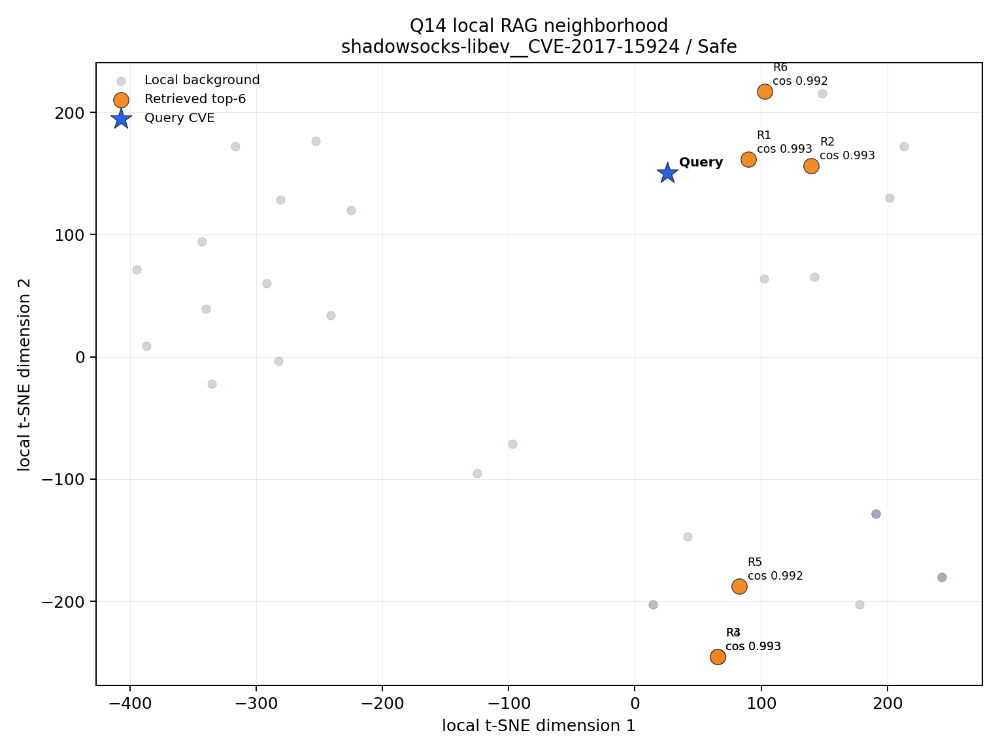
| Rank | Retrieved project | Source category | Reference family | Cosine | FAISS L2 | Distance percentile |
|---|---|---|---|---|---|---|
| R1 | CWE680_64-CWE680_Integer_Overflow_to_Buffer_Overflow__malloc_fscanf | Juliet | Juliet | 0.9932 | 6.0980 | 0.0000 |
| R2 | CWE680_63-CWE680_Integer_Overflow_to_Buffer_Overflow__malloc_fscanf | Juliet | Juliet | 0.9929 | 6.4197 | 0.0001 |
| R3 | autotrace-20200219.65 | Open Source Project | CVE/Open Source Project | 0.9926 | 6.6904 | 0.0005 |
| R4 | autotrace-20200219.65 | Open Source Project | CVE/Open Source Project | 0.9926 | 6.6904 | 0.0005 |
| R5 | autotrace-20200219.65 | Open Source Project | CVE/Open Source Project | 0.9925 | 6.7405 | 0.0005 |
| R6 | CWE680_41-CWE680_Integer_Overflow_to_Buffer_Overflow__malloc_fscanf | Juliet | Juliet | 0.9924 | 6.8212 | 0.0007 |
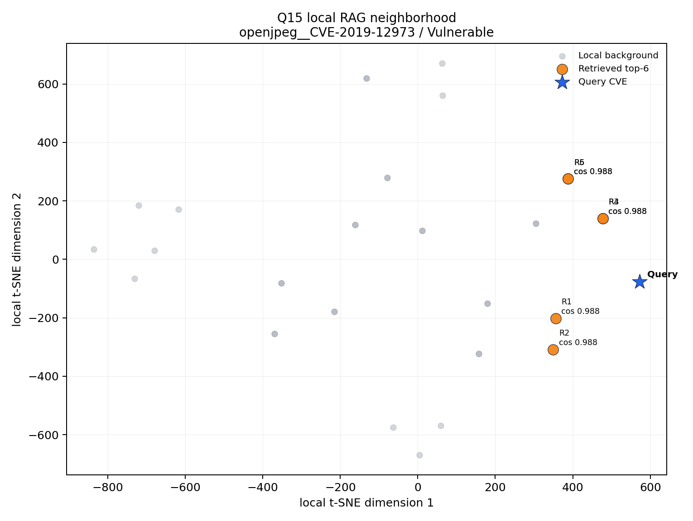
| Rank | Retrieved project | Source category | Reference family | Cosine | FAISS L2 | Distance percentile |
|---|---|---|---|---|---|---|
| R1 | sam2p-0.49.4 | Open Source Project | CVE/Open Source Project | 0.9884 | 10.6189 | 0.0002 |
| R2 | sam2p-0.49.4 | Open Source Project | CVE/Open Source Project | 0.9884 | 10.6189 | 0.0002 |
| R3 | sam2p-0.49.4 | Open Source Project | CVE/Open Source Project | 0.9884 | 10.6226 | 0.0005 |
| R4 | sam2p-0.49.4 | Open Source Project | CVE/Open Source Project | 0.9884 | 10.6226 | 0.0005 |
| R5 | sam2p-0.49.4 | Open Source Project | CVE/Open Source Project | 0.9883 | 10.7380 | 0.0005 |
| R6 | sam2p-0.49.4 | Open Source Project | CVE/Open Source Project | 0.9883 | 10.7380 | 0.0005 |
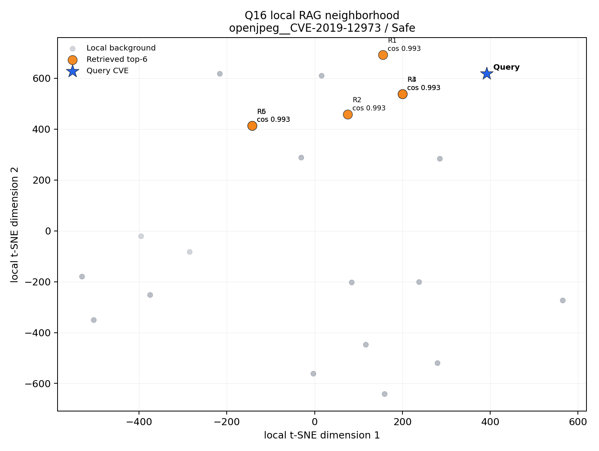
| Rank | Retrieved project | Source category | Reference family | Cosine | FAISS L2 | Distance percentile |
|---|---|---|---|---|---|---|
| R1 | sam2p-0.49.4 | Open Source Project | CVE/Open Source Project | 0.9930 | 6.4524 | 0.0002 |
| R2 | sam2p-0.49.4 | Open Source Project | CVE/Open Source Project | 0.9930 | 6.4524 | 0.0002 |
| R3 | sam2p-0.49.4 | Open Source Project | CVE/Open Source Project | 0.9930 | 6.4553 | 0.0005 |
| R4 | sam2p-0.49.4 | Open Source Project | CVE/Open Source Project | 0.9930 | 6.4553 | 0.0005 |
| R5 | sam2p-0.49.4 | Open Source Project | CVE/Open Source Project | 0.9928 | 6.6632 | 0.0005 |
| R6 | sam2p-0.49.4 | Open Source Project | CVE/Open Source Project | 0.9928 | 6.6632 | 0.0005 |
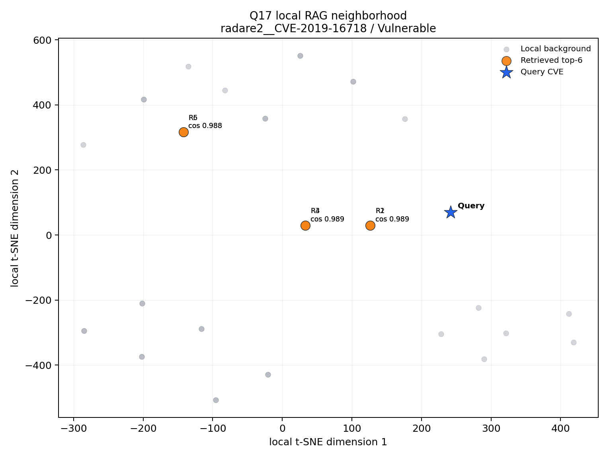
| Rank | Retrieved project | Source category | Reference family | Cosine | FAISS L2 | Distance percentile |
|---|---|---|---|---|---|---|
| R1 | firejail-0.9.62 | Open Source Project | CVE/Open Source Project | 0.9895 | 9.6625 | 0.0002 |
| R2 | firejail-0.9.62 | Open Source Project | CVE/Open Source Project | 0.9895 | 9.6625 | 0.0002 |
| R3 | firejail-0.9.62 | Open Source Project | CVE/Open Source Project | 0.9892 | 9.8834 | 0.0005 |
| R4 | firejail-0.9.62 | Open Source Project | CVE/Open Source Project | 0.9892 | 9.8834 | 0.0005 |
| R5 | urjtag-0.8 | Open Source Project | CVE/Open Source Project | 0.9880 | 11.0748 | 0.0007 |
| R6 | urjtag-0.8 | Open Source Project | CVE/Open Source Project | 0.9880 | 11.0748 | 0.0007 |
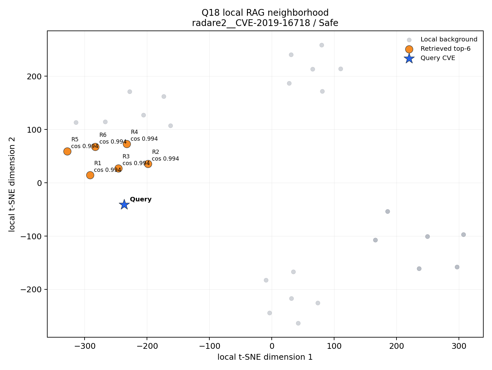
| Rank | Retrieved project | Source category | Reference family | Cosine | FAISS L2 | Distance percentile |
|---|---|---|---|---|---|---|
| R1 | urjtag-0.8 | Open Source Project | CVE/Open Source Project | 0.9940 | 5.4728 | 0.0002 |
| R2 | urjtag-0.8 | Open Source Project | CVE/Open Source Project | 0.9940 | 5.4728 | 0.0002 |
| R3 | urjtag-0.8 | Open Source Project | CVE/Open Source Project | 0.9940 | 5.4756 | 0.0005 |
| R4 | urjtag-0.8 | Open Source Project | CVE/Open Source Project | 0.9940 | 5.4756 | 0.0005 |
| R5 | urjtag-0.8 | Open Source Project | CVE/Open Source Project | 0.9940 | 5.5201 | 0.0005 |
| R6 | urjtag-0.8 | Open Source Project | CVE/Open Source Project | 0.9940 | 5.5201 | 0.0005 |
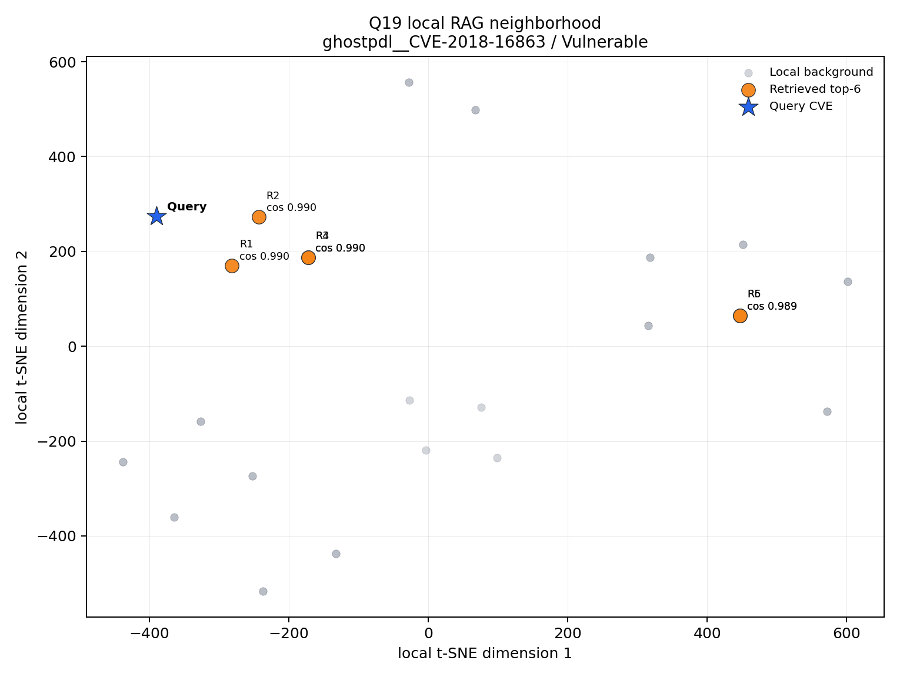
| Rank | Retrieved project | Source category | Reference family | Cosine | FAISS L2 | Distance percentile |
|---|---|---|---|---|---|---|
| R1 | firejail-0.9.62 | Open Source Project | CVE/Open Source Project | 0.9903 | 8.8897 | 0.0002 |
| R2 | firejail-0.9.62 | Open Source Project | CVE/Open Source Project | 0.9903 | 8.8897 | 0.0002 |
| R3 | firejail-0.9.62 | Open Source Project | CVE/Open Source Project | 0.9903 | 8.9154 | 0.0002 |
| R4 | firejail-0.9.62 | Open Source Project | CVE/Open Source Project | 0.9903 | 8.9154 | 0.0002 |
| R5 | urjtag-0.8 | Open Source Project | CVE/Open Source Project | 0.9895 | 9.6776 | 0.0007 |
| R6 | urjtag-0.8 | Open Source Project | CVE/Open Source Project | 0.9895 | 9.6776 | 0.0007 |
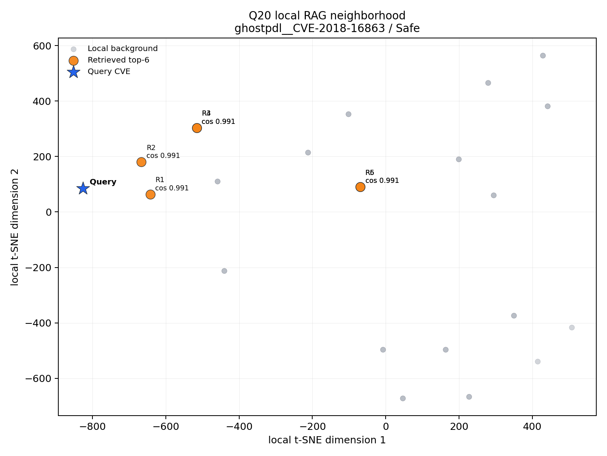
| Rank | Retrieved project | Source category | Reference family | Cosine | FAISS L2 | Distance percentile |
|---|---|---|---|---|---|---|
| R1 | sam2p-0.49.4 | Open Source Project | CVE/Open Source Project | 0.9911 | 8.1509 | 0.0000 |
| R2 | sam2p-0.49.4 | Open Source Project | CVE/Open Source Project | 0.9911 | 8.1509 | 0.0000 |
| R3 | sam2p-0.49.4 | Open Source Project | CVE/Open Source Project | 0.9909 | 8.3931 | 0.0002 |
| R4 | sam2p-0.49.4 | Open Source Project | CVE/Open Source Project | 0.9909 | 8.3931 | 0.0002 |
| R5 | sam2p-0.49.4 | Open Source Project | CVE/Open Source Project | 0.9908 | 8.4698 | 0.0005 |
| R6 | sam2p-0.49.4 | Open Source Project | CVE/Open Source Project | 0.9908 | 8.4698 | 0.0005 |